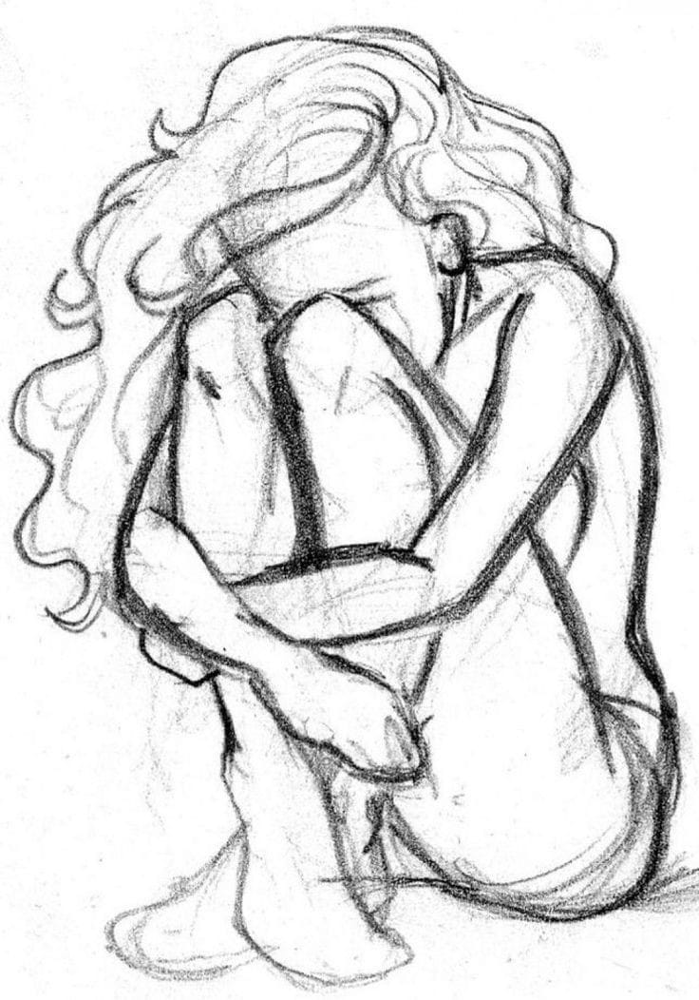
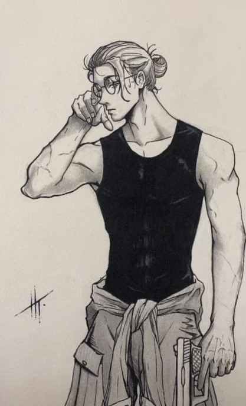
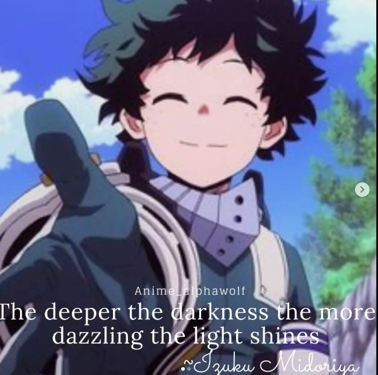
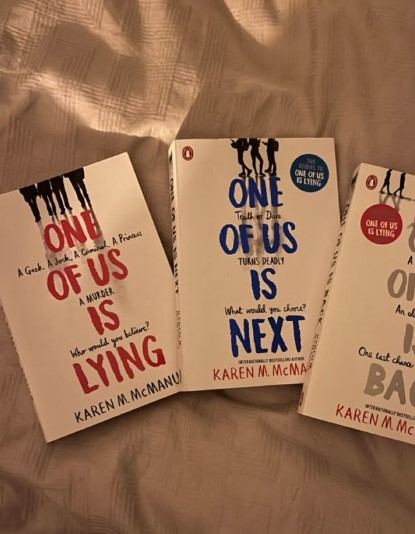

A talent nurtured from a tender age
Sad Girl
Mr Lover lover
My drawings often explore deep emotions, inspired by anime and personal experiences.
My sketches are mostly in black and white, with a few exceptions.
My drawings usually speak to a target audience who can interpret the emotions behind a photo
Whether a favorite character or a hidden emotion I draw what people feel but cannot put it down on paper
I create well-known anime quotes as an otaku myself.
The deeper the darkness, the more dazzling the light shines
I share anime-related content with a large following on Instagram, turning my passion into engagement.
I picked this up due to boredome and it evolved
This is mostly on instagram where I have a huge following of anime lovers
The main reason I do it is for fun
Book collecting.
One of Us is Lying series
I collect special editions of novels and rare books
My English teacher engrained a reading culture in me till this day
I look to collect rare or special editions of books
I have a well organized shelf full of books(mostly novels)
Other than collecting, I am an avid reader and seek out whole series of novels to pick out
My limit is the horror genre. I'd like a good night's sleep if you please.